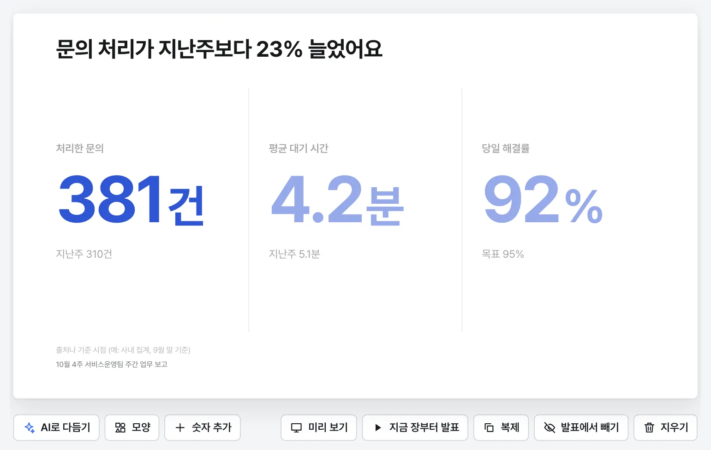
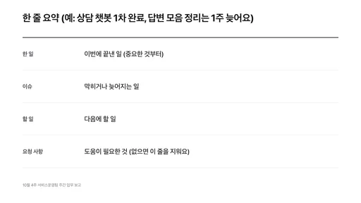
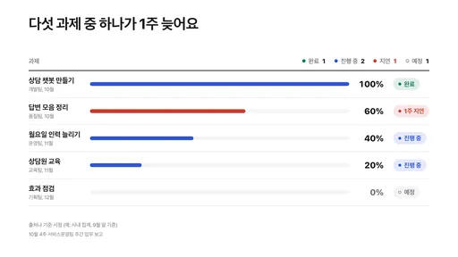
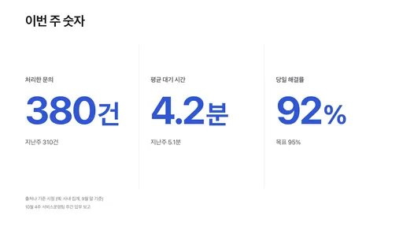
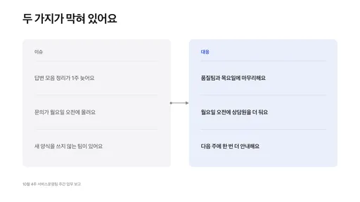
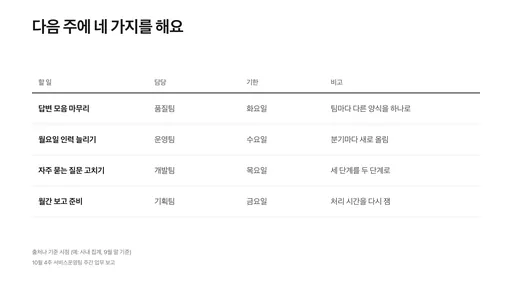
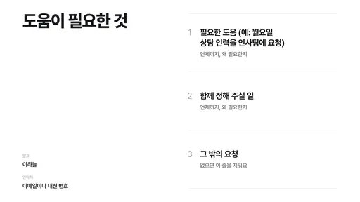
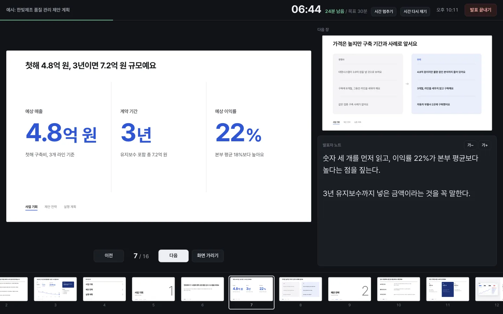
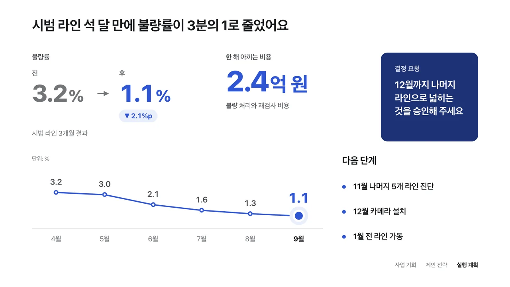

칸을 채워요
흐린 글씨가 그 칸에 들어갈 내용의 예시예요. 눌러서 고쳐 쓰면 되고, 간격과 글자 크기는 결이 맞춰요. 고칠 때마다 자동으로 저장돼요.
자주 하는 발표 13가지가 준비되어 있어요.
본부장님께 짧게 하는 보고면 결론과 숫자 위주로 줄이고, 팀 동료와 길게 보는 자리면 진행 방법을 더 넣어요.
주간·월간 업무 보고한 일과 할 일, 이슈를 알려요
7장으로 만들어요

한 장 요약
진행 현황
주요 숫자
이슈와 대응
다음 할 일
요청 사항주간·월간 업무 보고를 팀장에게 10분 동안 할 때의 구성이에요. 그림 속 글과 숫자는 칸마다 미리 적혀 있는 예시예요.
그림 속 글과 숫자는 칸마다 미리 적혀 있는 예시예요. 결에서 고른 대로 같은 장이 만들어져요.

흐린 글씨가 그 칸에 들어갈 내용의 예시예요. 눌러서 고쳐 쓰면 되고, 간격과 글자 크기는 결이 맞춰요. 고칠 때마다 자동으로 저장돼요.

F5를 누르면 전체 화면으로 시작해요. 방향키나 클리커로 넘기고, 노트북에는 다음 장과 발표자 노트, 경과 시간이 보이는 발표자 화면이 따로 떠요.

큰 숫자, 전과 후, 차트 같은 컴포넌트를 끌어다 놓으면 가로세로 12칸 격자에 맞춰 붙어요. 옆에 놓으면 너비를, 위나 아래에 놓으면 높이를 나누고, 글이 잘리거나 빈 곳이 남지 않게 크기가 자동으로 정해져요. 사이의 경계선을 끌어 크기를 조절할 수 있고, 자리가 모자라면 억지로 넣지 않고 이유를 알려 줘요.
HTML 파일 하나로 내보내면 받는 사람은 결이 없어도 브라우저로 열 수 있어요. PDF나, 장을 이미지로 담은 PowerPoint 파일로도 내보낼 수 있어요.
고칠 때마다 저장되고, 발표하기 전 모습은 따로 남아요. ‘본부장 보고본’처럼 이름을 붙여 둔 버전으로 언제든 돌아가요.
흰 바탕과 검은 바탕, 강조색 아홉 가지 가운데 고르면 모든 장이 한 번에 바뀌어요.
숫자와 막대가 차례로 나타나요. 움직임은 없음, 차분하게, 생동감 가운데 골라요.
보안 자료로 만들어도 안심할 수 있게, 처음부터 외부와 연결되지 않도록 만들었어요.
결은 이 PC 안(127.0.0.1)에서만 실행돼요. 같은 네트워크에 있는 다른 PC에서도 접속할 수 없어요.
글꼴과 이미지까지 모두 프로그램 안에 들어 있어요. 화면도, 내보낸 파일도 외부 주소에 연결하지 못하게 막아 두었어요.
이 브라우저 안과, 직접 고른 보관 폴더예요. 어느 서버에도 올리지 않아요.
Claude Code나 Codex에게 장 구성과 모양을 다듬어 달라고 할 수 있어요. 발표마다 직접 켜야 하고, AI는 제안만 해요. 바뀔 모습을 미리 보고 ‘적용하기’를 눌러야 바뀌고, 그 전 모습은 버전으로 남아요.
| AI에게 보이는 것 | 보이지 않는 것 |
|---|---|
| 발표 종류와 시간 | 제목과 작성한 글 |
| 장 순서와 레이아웃 | 숫자와 이미지 |
| 칸이 비어 있는지 | 발표자 노트 |
| 테마와 강조색 | 이름, 소속, 연락처 |
최신 버전 0.4.22026년 10월 26일
압축만 풀면 바로 쓸 수 있어요. 설치도, 관리자 권한도 필요 없어요.
‘Windows의 PC 보호’ 창이 뜨면 추가 정보를 누르고 실행을 눌러요. 인터넷이나 메신저로 받은 파일이면 뜨는 안내예요.
애플 인증을 받지 않은 앱이라 처음에는 macOS가 실행을 막아요. 시스템 설정 › 개인정보 보호 및 보안 아래쪽의 그래도 열기를 누른 뒤, 다시 더블클릭해서 열기를 눌러요.
켜 둔 Framo 창을 닫고 예전 폴더를 지운 뒤, 새로 다운로드한 파일의 압축을 풀어요. 지금 쓰는 버전은 Framo 첫 화면의 이름 옆에서 볼 수 있고, 버전별 업데이트 내역은 GitHub에 있어요.
발표는 브라우저와 직접 고른 보관 폴더에 저장돼서, 프로그램 폴더를 지워도 사라지지 않아요. 새 버전에서 만든 발표는 예전 버전에서 열리지 않으니, 발표 파일을 주고받는 사람끼리는 같은 버전을 써 주세요.